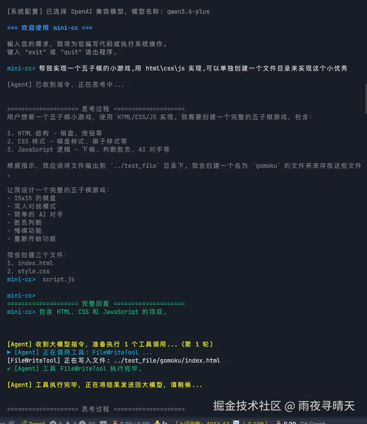
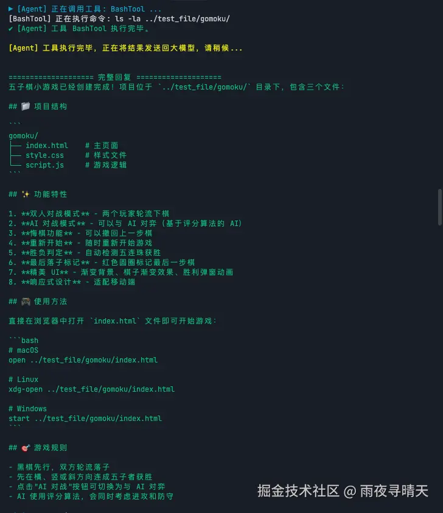
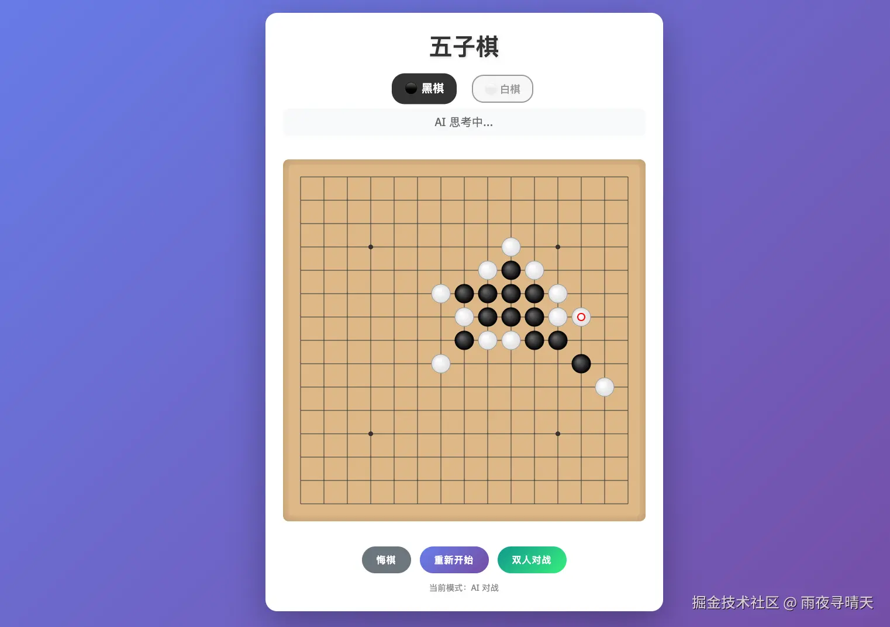
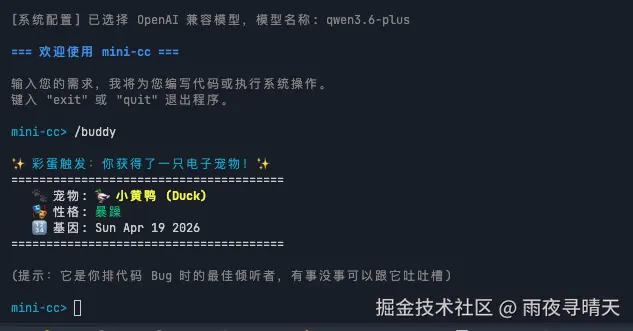

A lightweight, multi-language AI agent framework with native tool use, SSE streaming, and a ReAct event loop. No bloated abstractions.
一个轻量级、多语言的 AI 智能体框架，原生支持工具调用、SSE 流式输出和 ReAct 事件循环。拒绝臃肿抽象。

A fully functional agent prototype built for deep understanding. Not just a toy, but a robust architecture.
为深度理解而构建的全功能智能体原型。不仅仅是玩具，而是健壮的架构。
Support for Anthropic and OpenAI-compatible interfaces (DeepSeek, Qwen, Kimi). Seamless switching via env vars. 支持 Anthropic 和兼容 OpenAI 的接口 (DeepSeek, Qwen, Kimi)。通过环境变量无缝切换。
Native SSE streaming with real-time reasoning content (thinking process) display for advanced models. 原生 SSE 流式输出，支持高级模型实时展示推理过程（思维链）。
Built-in BashTool, FileReadTool, and FileWriteTool for native environment interaction and code modification. 内置 BashTool、FileReadTool 和 FileWriteTool，实现原生环境交互与代码修改。
Autonomous message event loop allowing multiple tool invocations until the task is marked complete. 自主消息事件循环，允许连续多次调用工具，直至任务标记完成。

One unified architecture implemented across four major ecosystems. Learn agent concepts in the language you know best.
同一套统一架构在四大主流生态系统中的实现。用你最熟悉的语言学习智能体概念。
Native implementation using pure functional architecture. Flawless streaming parsing and tool scheduling. 使用纯函数式架构的原生实现。完美的流式解析与工具调度。
Pythonic asynchronous agent using asyncio and strong type hinting. 使用 asyncio 和强类型提示的 Pythonic 异步智能体。
Extreme concurrency and performance utilizing Goroutines and Channels. 利用 Goroutines 和 Channels 达到极致并发与性能。
Memory safe, zero-cost abstractions, compiled to native binaries with minimal footprint. 内存安全，零成本抽象，编译为体积最小的原生二进制文件。
"Write a Gomoku web game." The agent autonomously thinks, creates files, writes HTML/JS/CSS, and delivers a playable app. "写一个五子棋网页游戏。" 智能体自主思考、创建文件、编写 HTML/JS/CSS，最终交付可玩的应用。


Type `/buddy` in the terminal. Shows off rich text rendering and PRNG capabilities directly in the CLI. 在终端输入 `/buddy`。直接在命令行中展示富文本渲染和伪随机生成能力。
Configure your API keys in .env and start exploring the core loops. 在 .env 中配置你的 API 密钥，开始探索核心循环。